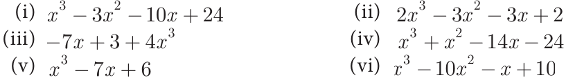

- Factorise each of the following polynomials using synthetic division:

3.7 Greatest Common Divisor (GCD)
The Greatest Common Divisor, abbreviated as GCD, of two or more polynomials is a polynomial, of the highest common possible degree, that is a factor of the given two or more polynomials. It is also known as the Highest Common Factor (HCF).
This concept is similar to the greatest common divisor of two integers.
For example, Consider the expressions \(14xy^{2}\) and \(42xy\). The common divisors of 14 and 42 are 2, 7 and 14. Their GCD is thus 14. The only common divisors of \(xy^{2}\) and \(xy\) are \(x\), \(y\) and \(xy\); their GCD is thus \(xy\).
\(14xy^{2} = 1 \times 2 \times 7 \times x \times y \times y\)
\(42xy = 1 \times 2 \times 3 \times 7 \times x \times y\)
Therefore the requried GCD of \(14xy^{2}\) and \(42xy\) is \(14xy\).
To find the GCD by Factorisation
- Each expression is to be resolved into factors first.
- The product of factors having the highest common powers in those factors will be the GCD.
- If the expression have numerical coefficient, find their GCD separately and then prefix it as a coefficient to the GCD for the given expressions.
Example 3.41
Find GCD of the following:
- \(16x^{3}y^{2},\ 24xy^{3}z\)
- \((y^{3} + 1)\) and \((y^{2} - 1)\)
- \(2x^{2} - 18\) and \(x^{2} - 2x - 3\)
- \((a - b)^{2},\ (b - c)^{3},\ (c - a)^{4}\)
Solutions
\(16x^{3}y^{2} = 2 \times 2 \times 2 \times 2 \times x^{3}y^{2} = 2^{4} \times x^{3} \times y^{2} = 2^{3} \times 2 \times x^{2} \times x \times y^{2}\)
\(24xy^{3}z = 2 \times 2 \times 2 \times 3 \times x \times y^{3} \times z = 2^{3} \times 3 \times x \times y^{3} \times z = 2^{3} \times 3 \times x \times y \times y^{2} \times z\)
Therefore, \(GCD = 2^{3}xy^{2}\)
\(y^{3} + 1 = y^{3} + 1^{3} = (y + 1)(y^{2} - y + 1)\)
\(y^{2} - 1 = y^{2} - 1^{2} = (y + 1)(y - 1)\)
Therefore, \(GCD = (y + 1)\)
\(2x^{2} - 18 = 2(x^{2} - 9) = 2(x^{2} - 3^{2}) = 2(x + 3)(x - 3)\)
\(x^{2} - 2x - 3 = x^{2} - 3x + x - 3\)
\(= x(x - 3) + 1(x - 3)\)
\(= (x - 3)(x + 1)\)
Therefore, \(GCD = (x - 3)\)
\((a - b)^{2},\ (b - c)^{3},\ (c - a)^{4}\)
There is no common factor other than one.
Therefore, \(GCD = 1\)